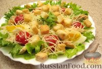
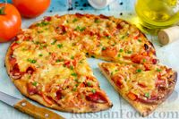

Салат Цезарь

Паста Карбонара

Смачный Бургер

Домашняя пицца

Автор: Алексей
1. Нарезаем бекон квадратиками.
Два зубчика чеснока раздавливаем ножом.
Разогреваем сковороду, растапливаем 1 ст. ложку сливочного масла и обжариваем бекон с чесноком.
Жарим на слабом огне 10 минут, из бекона должен вытопиться жир, но бекон должен остаться мягким.
После обжаривания чеснок удаляем..
2. В кипящую воду (2,3 л) добавляем 1 ст. ложку соли,
1 ст. ложку оливкового масла и спагетти.
Варим спагетти так, как указано на их упаковке..
3. Отделяем 3 желтка от яичных белков (белки здесь не понадобятся).
Кладем в миску желтки и одно яйцо, солим и перчим (по 1 щепотке), хорошо взбиваем.
4. Добавляем в яичную смесь 2 ст. ложки тёртого сыра, перемешиваем.
5. Готовые спагетти откидываем на дуршлаг, предварительно оставив 300 мл воды, в которой они варились.
6. Выключаем огонь под сковородой с беконом, добавляем спагетти и 1 ст.
ложку сливочного масла.
Вливаем взбитые яйца с сыром, тщательно всё перемешивая.
Постепенно добавляем 300 мл воды от спагетти и постоянно перемешиваем,
яйца не должны свернуться.
7. Чтобы соус немного загустел, под сковородой включаем слабый огонь и постоянно перемешиваем примерно 1 минуту, чтобы яйца не сварились.
Если соус получится очень густой, можете добавить еще воды.
8. Выкладываем спагетти на тарелку, сверху посыпаем черным молотым перцем и тёртым сыром.
Паста карбонара готова.
Приятного аппетита!
Автор: Анна
1. ...
2. ...
3. ...
Автор: Елена
1. Смешайте сухие ингредиенты.
2. Добавьте растопленное масло и яйца.
3. Выпекайте при 180°C 30-35 минут.
4. Остудите перед подачей.